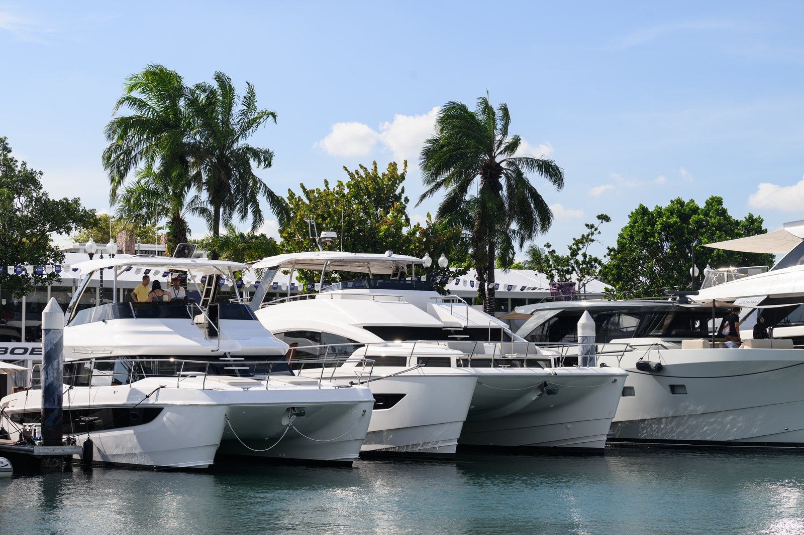

Conferences · Boat & Yacht
Singapore Yachting Festival 2027
- Dates
- –
- Venue
- ONE°15 Marina Sentosa Cove
- Location
- Singapore, Singapore
- Format
- In-person
- Category
- Boat & Yacht
- Industry
- Yachting
- Organiser
- ONE15 Events Management
- Official website
- https://singaporeyachtingfestival.com/
About
Southeast Asia's flagship yachting festival. A previous-edition official figure of 14,280 visitors in April 2026 is not used as 2027 organiser attendance.
Topics: boat show, yachting, marine.
No organiser attendance figure found on the official pages fetched 24 Nov 2026 for this upcoming edition. Ranked by our estimated size tier 'medium' (10,000-30,000 attendees/visits), a judgement from format, venue and scale, not an official number.